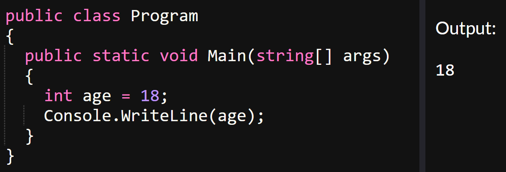
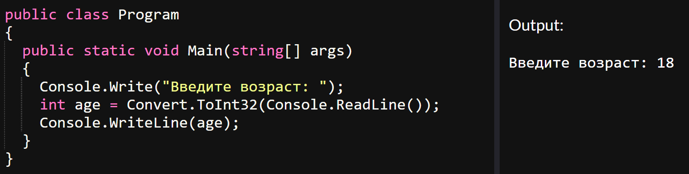
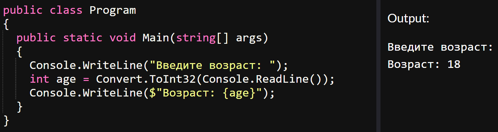
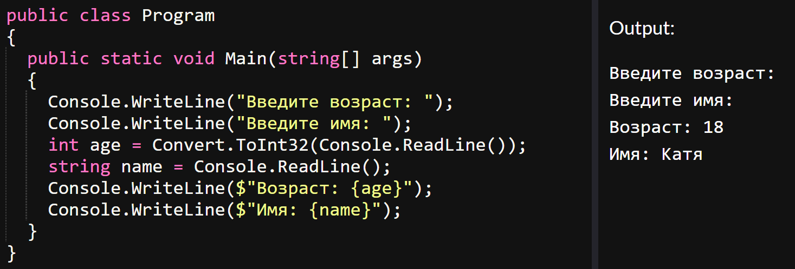
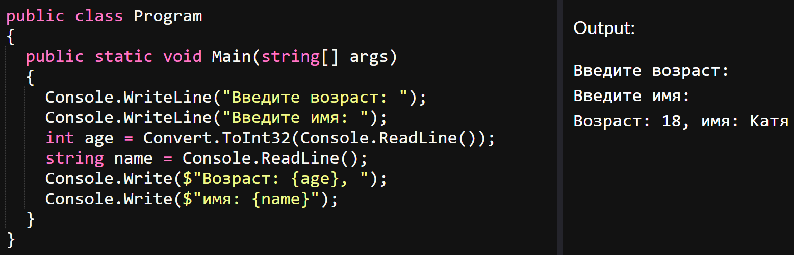

главная
лекции
задания
главная
лекции
задания
Давайте ознакомимся с правилами ввода и вывода данных в языке C#. Разберем эти правила на простой задаче: нам нужно узнать возраст пользователя. Для этого мы можем создать переменную, назовем ее age. Мы можем сразу присвоить ей значение и использовать его дальше при решении следующей задачи:
Но что делать, если мы заранее не знаем значение? В таком случае воспользуемся методом ReadLine(). Значение, которое пользователь введёт в консоль, будет присвоено этой переменной:
Если нас спросят “сколько пользователю лет?”, мы должны вывести значение переменной age. Это можно сделать с помощью метода WriteLine(), который выводит ответ построчно, или Write(), который выводит ответ в одну строку:
Посмотрим на разницу между методами WriteLine() и Write(). Если нам необходимо вывести несколько значений на разных строках, то скорее всего мы воспользуемся WriteLine():
Если значения нужно выводить в одной строке, воспользуемся Write():
